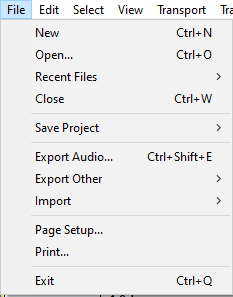
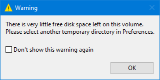

File Menu
- 
New Ctrl + N
Creates a new and empty project window to start working on new or imported Tracks. This new work environment can then be saved as an Audacity Project File (.AUP) for easy and full retrieval of its contents via the Save Project or Save Project As File menu functions.
Audacity will warn on start up or when using to create a new project if you have 100 MB or less space in the temporary folder for recording or editing.
100MB is approximately 5 minutes of stereo or 10 minutes of mono at default settings.
- 
Open Ctrl + O
Launches a file selection window where you can Open one or more Audacity AUP3 Project files.
If an empty project window exists, that window will be used for the first project or imported file. Any subsequent opened projects or audio files will create new project windows.
| Old AUP files from earlier versions of Audacity can be opened with . Audacity will convert these into modern AUP3 format, you will need to Save them for them to be stored in AUP3 format. Once an AUP project has been converted like this it can no longer be opened in Audacity 2.4.2 or earlier. Note that this will leave behind the old AUP file and its associated _data folder which you will probably want to delete to recover disk space.
|
| Note carefully that this does not actually "open" your audio files for editing, rather it copies them into Audacity in Audacity's internal project format where they can be worked on. |
You are strongly advised not to open a project that is on networked storage or cloud storage (or an external USB stick/disk) as it is unlikely to be fast enough for satisfactory recording and editing.
|
Recent Files ("Open Recent" on Mac)
Lists the full path to the twelve most recently saved or opened projects or most recently imported audio files. The oldest item at the bottom is removed when a new item is added to the top. When you delete an Audacity project or audio file it will remain in the list, but will be removed from the list if you select it.
- To clear the entire list, choose "Clear" underneath the last item in the list.
Close Ctrl + W
Closes the current project window, prompting you to save your work if you have not already saved.
Save Project Ctrl + S
The Save Project submenu enables you to Save your project in full uncompressed mode. You can also store projects as backup safety copies at stages throughout your project. Note that Audacity projects only work in Audacity, they cannot be read and played by other applications.
The current zoom level is saved in the project when you save the project. When a saved project is opened, it should automatically be zoomed to the same place and zoom level as when you saved it.
It is not advisable to save your project to be on an external USB stick/disk as it is unlikely to be fast enough for satisfactory recording.
|
Export Audio
Exports audio from Audacity into audio file formats that can be read and played by other applications.
Export Other
The Export submenu enables you to Export label files or MIDI.
Import
The Import submenu enables you to import audio files or label files into your project. Files in various audio formats can be imported into Audacity.
For details of the available imports see this page.
Page Setup
Opens the standard Page Setup dialog box prior to printing.
Prints all the waveforms, spectrogams and Note Tracks in the current project window (and the contents of any Time Tracks or Label Tracks, with the Timeline above. Everything is printed to one page.
Exit Ctrl + Q
Closes all project windows and exits Audacity. If there are any unsaved changes to your project, Audacity will ask if you want to save them. Note that it is not necessary for you to save changes if you have already exported your mix as a WAV or MP3 and you are now happy with it. But if you are working on a mix and plan to continue later where you left off, saving an Audacity Project will let you restore everything, exactly as you left it.